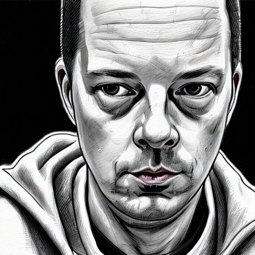
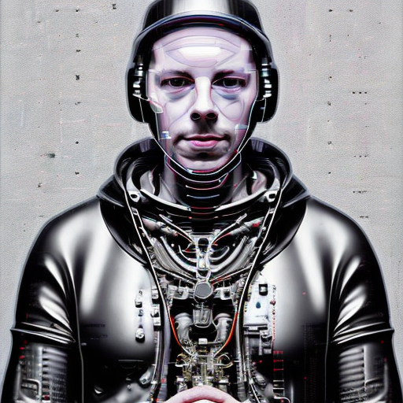
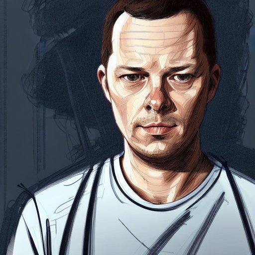

DreamPic.AI - AI Generated Pictures Starring You
For over a year I have been siletnly playing with neural networks. Artificial Intelligence is definitely the future of humanity if it survives and neural networks is the most promising piece of technology leading us there. My main area of interests besides general AI lies in joining music and AI and so I was playing with it but there are no any great results yet to share. And recently there was a really revolutionary thing happened - a group of researchers released Stable Diffusion - a neural network capable of generating images given a textual prompt. Why it was revolutionary? Because it is going to change all graphical design industry and many more related industries and how people work. All history of human graphical art and expression is compressed into several gigabytes of neural network model that you can freely download and run on your machine to generate never exited before artworks. What people do with SD is mind blowing. And one of such things is training SD with pictures of a person so it is capable of producing new pictures of that person in literally every context. This is where my new project starts.
I saw how other people doing similar projects online. First one was @levelsio with his AvatarAI project. By the way it was a great success of him he managed to do over 100000$ of sales for over a week selling AI generated avatars. So I was motivated enough to try. After trying the model on colab I had so much fun that decided that anyone who ever tried to create its own pictures in any kind of style will have the same feelings of joy and fun and there are place for any number of similar projects on the internet.
So I built my version - DreamPic.AI The algorithm that is used to train Stable Diffusion is called DreamBooth, so this was where the name came from. On the other hand it means you can create any picture of your dreams. I hope everyone likes how cool it came.
I had great fun and joy implementing this project for many reasons. First - I never took any AI model to production before, now I have experience and moreover I have my own engine to deploy any kind of models to production. So any new AI project will be made much faster by me. I don’t use any API or service to host a model rather I created a library and command line utility that can provision servers at Google Cloud with the desired parameters, GPU, etc. This server then fully automatically configured to handle model training. And it is used to train model and generate new pictures.
Second - I did major update in my tech stack. Now it includes most recent version of Django, React, Bootstrap or Tailwind CSS, Docker based development environment with ready to use Redis, Celery, Vite, Emacs integration scripts, Ansible deployment scripts and many more libs and packages. I changed how I run projects in production. It was uwsgi and now it is gunicorn. I always deployed Postgres, now I use sqlite. I’ve been using supervior, now I use systemd. Major simplification and major upgrade in clarity. From years of experience I concluded that all that complex things are only needed when they are really needed. No need to complicate things from the beginning. It took significant time to integrate everything, but again now when I want to start a new project I just take all these boilerplate and can start implementing new ideas in minutes.
Project is running 1 week. Unfortunately I don’t have 200k followers on twitter so only around 100 people visited my website since launch and I didn’t made any sales. But I haven’t had so much fun coding for very long. I couldn’t sleep well because all free time I have I used to work on it. And I have so many more ideas to try to implement not for the sake of making money but for fun of creation and exploring something fascinating and because I can, so why not :)
Below are some pictures of me generated by the AI:



By the way since you are reading this don’t hesitate to create your Dream Pic.
UPDATE: Project is discontinued, more about the reasons here